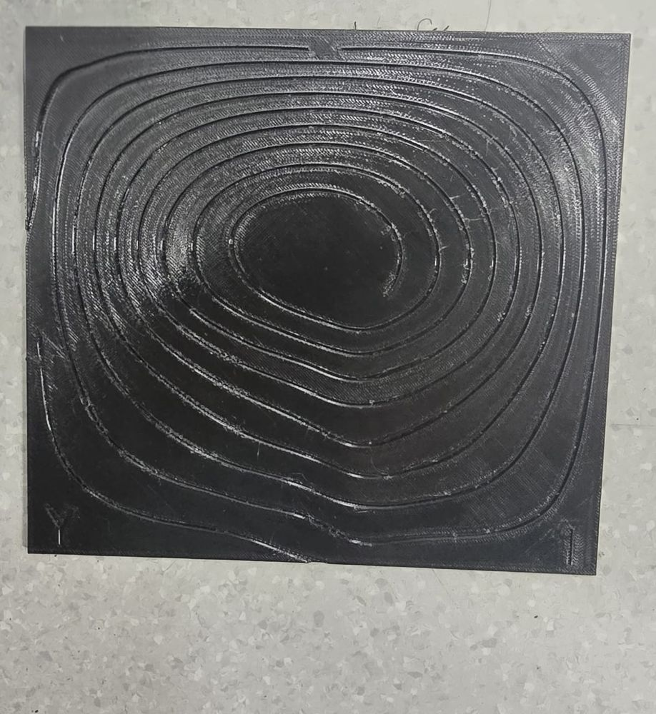
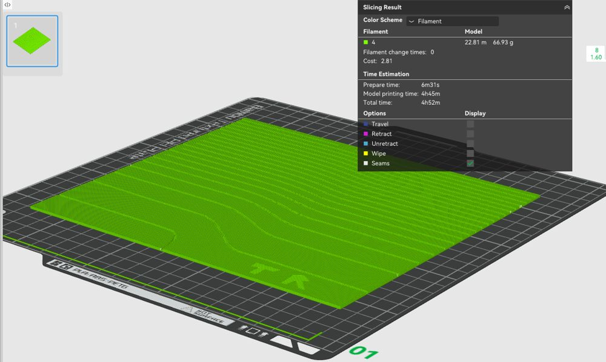
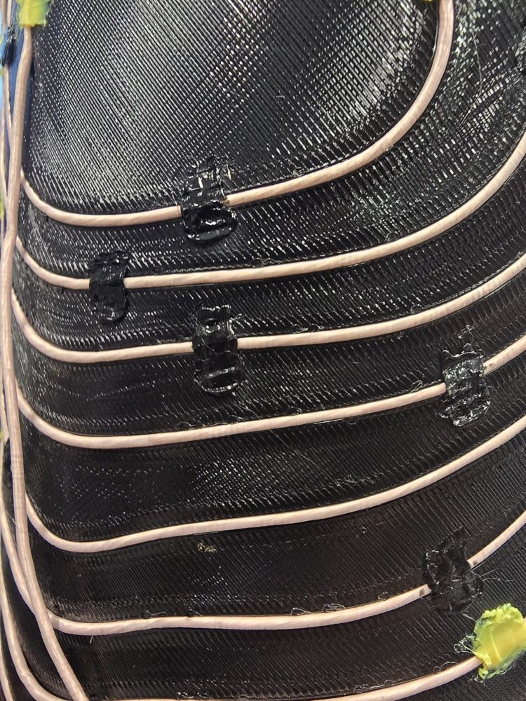
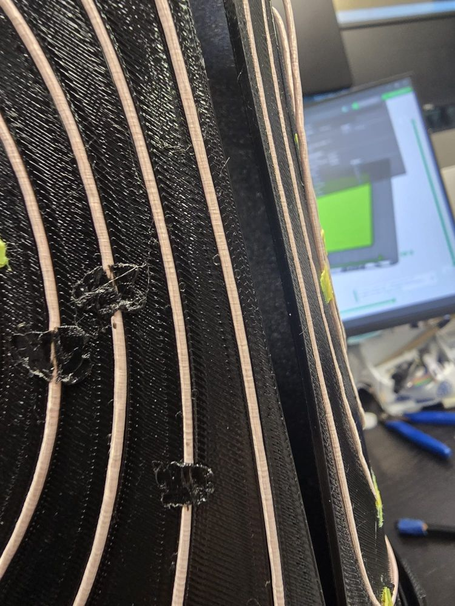

Gradient coils for the 32 mT portable MRI
Roll a flat plate into a gradient coil.
Each coil starts as copper wire laid in the grooves of four flat 3D-printed plates. Wrap the plates into a tube and the wire makes a magnetic field that changes steadily from one side of the scanner to the other. That steady change is what lets the scanner tell where a signal comes from.
- X coil
- Ø 119.8 mm, gradient across the bore
- Y coil
- Ø 126.2 mm, gradient vertical
- Z coil
- Ø 132.6 mm, gradient along the bore
Loading the coil…
What a gradient coil does
The permanent magnet ring makes a strong, even field, B0 = 32 mT, pointing along the bore. Protons in that field spin at one frequency, the Larmor frequency:
f = γ · B0 = 42.58 MHz/T × 0.032 T ≈ 1.36 MHz
If every proton spins at the same frequency, the scanner hears one note and cannot tell where it came from. A gradient coil adds a small extra field that grows in a straight line across the scanner. Now each position has its own frequency, and the frequency tells you the position.
We need three coils, one per direction. Each is designed to give 1.0 mT/m for every ampere of current (written 1.0 mT/m/A). We test them at 5 A.
The field only works as a ruler if it is a straight line. We call how far it bends away from a straight line the linearity error. Our target is below 5 % over a 50 mm field of view (FOV).
Try it: from current to position
- Gradient
- –
- Frequency step per mm
- –
- Frequency range across 50 mm
- –
- Image shift from magnet error
- –
Uses each coil’s pyCoilGen design value (X 1.053, Y 1.015, Z 1.282 mT/m/A). Blue is less field, red is more. The lines join points of equal field: straight, evenly spaced lines mean a linear gradient. A magnet error moves the whole pattern, so the image lands in the wrong place.
Materials and software
Everything you need for all three coils. Rows marked to be added are still being written up by the gradient team.
| Item | What it is | Used for |
|---|---|---|
| Hardware | ||
| Litz wire | 400 strands × 0.05 mm, 0.589 mm² of copper, 0.0264–0.0345 Ω/m | The coil conductor. About 13.6 m (X), 14.1 m (Y) and 17.1 m (Z), plus leads. |
| Grooved plates | 12 printed plates, 4 per coil, in TPU 95A (3D Aura, Singapore), 1.6 mm thick | Hold the wire on its designed path. Flexible enough to bend into a tube, stiff enough to keep its round shape. About 67 g of TPU and 4 h 50 min of printing per plate. |
| 3D printer | Bambu Lab P1S, 0.4 mm nozzle, textured PEI plate | Printing the plates (each plate is about 190 × 180 mm, X/Y, or 207 × 180 mm, Z). |
| Former | To be added | The tube the plates wrap around. |
| DC power supply | At least 5 A; constant-current mode recommended | Driving one coil at a time during testing. |
| 3-axis gaussmeter | Reads Bx, By, Bz in mT | Measuring the coil’s field. |
| Motorised 3-axis stage | Moves the probe on a grid | Scanning 8 × 8 × 8 points, 7 mm apart. |
| Multimeter | Low-ohm range | Checking each coil’s resistance, cold and warm. |
| Software | ||
| Python 3.12 | Not 3.13: pyCoilGen needs numpy 1.x | Running the design scripts. |
| pyCoilGen | Open-source coil designer | Finding the wire path that makes the gradient. |
| trimesh, shapely, cadquery-ocp | Python packages | Reading the STL, checking crossings, writing STEP files. |
| FastHenry2 | Free inductance solver (Windows, 64-bit) | Inductance of each coil. Without it, pyCoilGen reports 0 Ω and 0 H. |
| VS Code | Code editor | Opening the examples folder and running scripts. |
| Onshape | Browser CAD | Cutting the grooves into the plates. |
Build it, step by step
0 of 9 steps checked
Tick each step when its checkpoint passes. Your ticks are kept in this browser only.
-
Set up Python
pyCoilGen needs numpy 1.x, which has no ready-made packages for Python 3.13, so install Python 3.12. Keep everything inside a virtual environment, so it doesn’t clash with other projects.
py -3.12 -m venv venv venv\Scripts\activate pip install pycoilgen trimesh pip install shapely cadquery-ocpInstall FastHenry2 from the FastFieldSolvers bundle. Open the examples folder in VS Code and choose
venv\Scripts\python.exeas the interpreter.Checkpoint:
python -c "import pyCoilGen"runs without an error. -
Design the three coils
Each generation script holds an
arg_dictthat describes one coil. The three scripts are copies of each other with four lines changed:Script Direction Radius (m) Length (m) Regularisation xgrad_coil_1198mm.py x 0.0599 0.35 100 ygrad_coil_1262mm.py y 0.0631 0.35 300 zgrad_coil_1326mm.py z 0.0663 0.36 100 Diameter rule: radius in metres = diameter in mm ÷ 2 ÷ 1000. For 126.2 mm that gives 0.0631 m. This is the centre line of the wire; the outside of the wire sits a few mm further out. The coils nest inside each other, so each diameter must clear the coil inside it.
The scripts ask for
target_gradient_strength: 0.9, but the solver goes past it: the designs reach 1.053 (X), 1.015 (Y) and 1.282 (Z) mT/m/A, which meets the 1.0 target.Checkpoint: each script writes
debug/<project>_final.npyand a wire-only STL such asxgrad_coil_1198mm_wire_0_x.stl. -
Smooth the wire path
A smooth path has fewer kinks and reversals. It exports to CAD in seconds and cuts cleanly. Two settings control it:
'smooth_factor': 5, # default 1 = off 'normal_shift_smooth_factors': [4, 6, 4], # default [2, 3, 2]The first averages each point with its neighbours. The second smooths the return paths, which are lifted 3 mm outward so crossing wires don’t touch.
Checkpoint: rerun and compare the efficiency. Too much smoothing pulls it away from the target.
-
Summarise and export
Each summary script loads the saved design and prints everything you need to judge it: gradient efficiency, true outer diameter, coil length, inductance (from FastHenry2), litz resistance, and voltage and power at 5 A. It also writes the wire points as TXT and the flattened path as STEP curves, all in millimetres.
Checkpoint: the efficiency is near the target, the outer diameter clears the next coil, resistance and inductance are not 0, and the STEP line ends with
write ok: True. -
Unwrap the path onto a flat sheet
To cut grooves in a flat plate, the wire path on the cylinder is rolled out flat: the angle around the tube becomes a distance along the sheet.
- X and Y are four saddle-shaped lobes. One global unwrap of the whole path works. Splitting into lobes first scrambles it.
- Z is a double helix that winds around many times. Instead of unrolling, every turn is folded onto one circumference (π × 132.6 ≈ 416.5 mm), cut at the seams, smoothed, and exported as four quadrant STEP files.
Checkpoint: look at the preview plot before trusting the STEP files. Curves should never jump straight across the sheet.
-
Cut the grooves in CAD
Import the STEP curves into Onshape, sweep-cut a groove along them into a flat plate, and split the sheet into four plates that fit the printer: 1–4 for X and Y, TL, TR, BL, BR for Z. Each plate carries its label, so the pieces can’t be mixed up.
To be added: groove width and depth, plate thickness, and how the plates are split.
Checkpoint: the plates open at the right size (X sheet about 375 × 360 mm), and grooves continue across every seam. Use the 3D viewer above to compare.
-
Print the plates
Print all twelve plates in TPU 95A, a flexible filament (we use 3D Aura, Singapore). The ready-made files are in Files.
Why TPU 95A? At 1.6 mm thick it does two jobs that pull in opposite directions. It is flexible enough to bend each flat plate into a curve, yet once the plates form a cylinder, the tube is stiff enough to stand upright and keep its round shape without deforming.
Lay each plate flat on the bed with the grooves facing up. No supports are needed.

A printed Y plate: one saddle loop of grooves, ready for wire. 
A Z plate in Bambu Studio: flat, grooves up, about 4 h 50 min. Setting (Bambu Studio) Value Printer Bambu Lab P1S, textured PEI plate Nozzle 0.4 mm, standard flow Filament TPU 95A Process profile 0.20mm Strength Layer height 0.2 mm (first layer 0.2 mm) Wall loops 6 Top shell 5 layers (1.0 mm) Bottom shell 3 layers (0.6 mm) Sparse infill 25 %, grid Orientation Flat on the bed, grooves facing up Supports None Print time About 4 h 50 min per plate (X, Y or Z), so about 58 h for all twelve Filament used About 67 g (23 m) for a Z plate At 0.2 mm per layer, a 1.6 mm plate is just 8 layers, and the top shell (5) plus bottom shell (3) use all of them. The plate prints solid, so the infill setting has no effect.
Known problem: the wire pops out of the groove
The groove is a 1.3 mm round channel. The printer cannot build the curved top edge that would close over the wire, so the groove stays open and the wire can lift out, especially once the plate is bent.
Fix: add small dabs of extra TPU by hand across the wire every few centimetres, so the wire is locked into the groove.

Dabs of TPU lock the wire into the groove. 
Wound plates after bending; the dabs keep the wire in place along the curve. To be added: the tool used to apply the TPU (3D pen, soldering iron …) and how far apart the dabs are.
Checkpoint: each plate is 1.6 mm thick, bends by hand without cracking, and the wire fits into the grooves.
-
Wind the litz wire
Lay the litz wire into the grooves, following the path from one lead to the other. Lock it in with dabs of TPU as you go (see the known problem in step 7).
To be added: winding order, how the leads leave the coil.
-
Wrap and nest the coils
Wrap each coil’s four plates into a tube, then nest them: X (smallest) inside Y inside Z. Use the slider above to see how a flat set becomes a tube.
To be added: the former, how the plates are fixed, how the three coils are held in the magnet.
Checkpoint: measure each coil’s resistance. It should be close to the prediction in Test.
Common problems and quick fixes
- ModuleNotFoundError: pyCoilGen
- VS Code is using the system Python. Run
venv\Scripts\python.exeor set the interpreter. - “No Python at …”
- The venv was copied from another PC. Fix the paths in
venv\pyvenv.cfg, or make a new venv. - Resistance and inductance are 0
- FastHenry2 is missing. Install it, then rerun the generation script.
- STL “string is not a file”
CAD_filenameis missing, so the STL went toimages/. Add it and regenerate.- Coil is microscopic in CAD
- The points were written in metres. Export in millimetres.
- STEP export hangs
- The path is too kinked. Turn smoothing up, and use interpolation through the points instead of a least-squares fit.
Test the coils
A coil passes when its gradient is close to the design and the field is close to a straight line.
How we measure
- Put the probe of a 3-axis gaussmeter on a motorised stage and move it through an 8 × 8 × 8 grid, 7 mm apart: a 49 mm cube at the centre of the coil.
- Run 5.0 A DC through one coil at a time and record Bz at all 512 points.
- Repeat the scan at 0 A with the coil in place. Fit a flat plane to it and subtract, so only the coil’s own field is judged.
- Keep the 208 points inside the 50 mm field of view for the FOV numbers.
How we judge
Efficiency. Fit the best straight line through all points: Bz = a0 + a1x + a2y + a3z. The slope |G| = √(a1² + a2² + a3²) is the gradient. Divide by the current to get mT/m/A.
Linearity. Average the 64 readings in each plane along the coil’s axis, then compare each step between planes with the average step. Report the RMS difference in %.
Design values at 5 A
| Coil | Efficiency (mT/m/A) | Gradient at 5 A (mT/m) | Wire length | Litz resistance | Voltage at 5 A | Power at 5 A |
|---|---|---|---|---|---|---|
| X | 1.053 | 5.27 | 13.6 m | 0.36–0.47 Ω | 1.80–2.35 V | 9.0–11.7 W |
| Y | 1.015 | 5.08 | 14.1 m | 0.37–0.49 Ω | 1.86–2.43 V | 9.3–12.2 W |
| Z | 1.282 | 6.41 | 17.1 m | 0.45–0.59 Ω | 2.26–2.95 V | 11.3–14.7 W |
Resistance = wire length × the litz datasheet range. Litz is 2.6–3.5× more resistive than the solid 1.3 mm wire pyCoilGen assumes, because only about 35 % of its footprint is copper. The X coil’s inductance is 37.7 µH (FastHenry2), so its current rises in about L/R ≈ 0.1 ms.
Files
Click a file to download it. Everything is also in the GitHub repository.
Python scripts
- xgrad_coil_1198mm.pyDesign X
- ygrad_coil_1262mm.pyDesign Y
- zgrad_coil_1326mm.pyDesign Z
- summ_data_smth_x1198.pySummarise and export X
- summ_data_smth_y1262.pySummarise and export Y
- summ_data_smth_z1326.pySummarise, fold and export Z